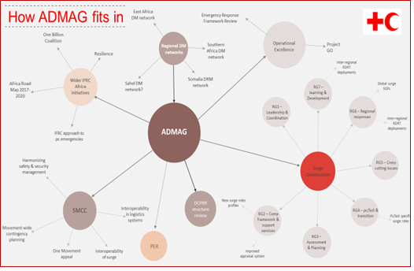

IFRC Africa
FedNet
GO (global)
Africa Operations Room
Africa Disaster Management Advisory Group
Purpose
The Purpose of the ADMAG is to Strengthen Movement Coordination and Cooperation (SMCC) in supporting Disaster Risk Management (DRM) preparedness and response capacity of African National Societies, contributing to the strengthening of community resilience by connecting the national, regional, and global levels of the Red Cross and Red Crescent Movement’s work in this field in Africa.
Link to sub-regional DM networks
It is clearly understood that the strength of the DM advisory group at the pan Africa level is dependent on the strength of the sub-regional DM networks. Currently the East Africa, Southern Africa and PIROI (Indian Ocean Islands) DM networks are well established, but more work is needed to ensure Sahel, Central and West Africa DM networks are up and running. Peer to peer support will be encouraged to see what learnings from the existing networks can be leveraged to support the re-establishment of other networks in Africa. The annual face to face meeting will be an excellent opportunity to progress on this. Similarly , the sub-regional DM networks should be revitalized and organize their annual face to face meetings

Share and Learning
30 Nov – 1 Dec 2017, Nairobi Meeting Minutes
Building Safer and More Resilient communities in Africa (Draft.V.1)
ADMAG Annual Action Plan 2018
ADMAG Meeting Agenda Nairobi, 5-7 September 2018
Meeting Report (DRAFT as of 16.09.18) 3rd Face to Face Meeting 5-7 September 2018, Nairobi
ADMAG Meeting Presentations, 5-7 September
Strategy 2019
Proposal
Budget